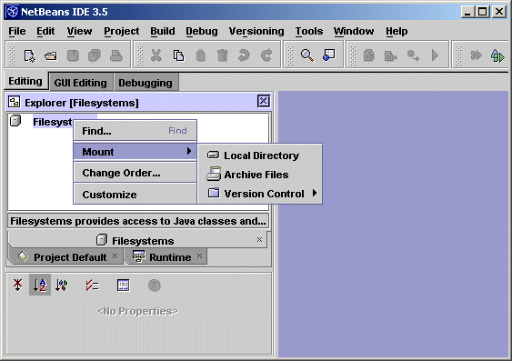
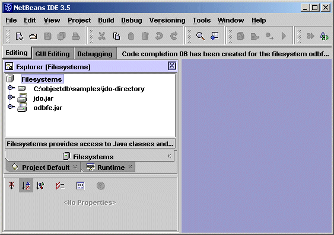
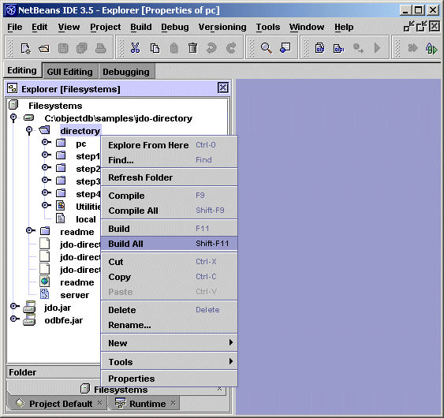
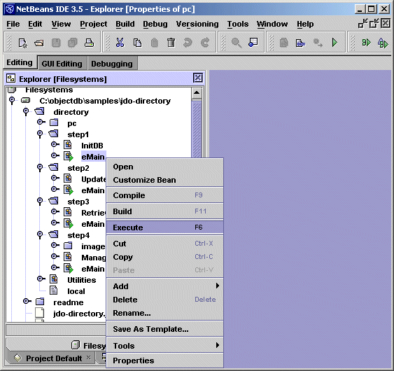
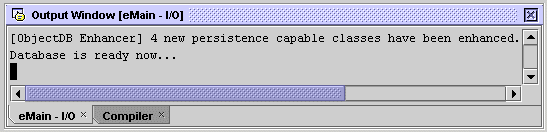
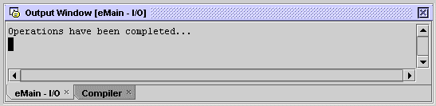
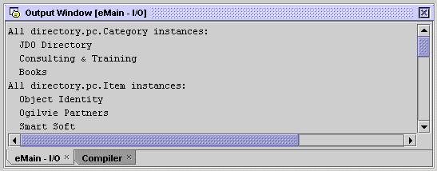

The JDO Directory demo has been tested with NetBeans 3.5.
Update the FileSystemsTo build and run the demo you have to update the FileSystems. This can be done in the current project (or in a new project using Project => Project Manager).

Right click the FileSystems root node. Then use Mount => Local Directory to add the demo directory. Use Mount => Archive Files to add jdo.jar and ObjectDB jar file (odbfe.jar / odbse.jar / odbee.jar). Mounting these JAR files is necessary for every project that uses ObjectDB and JDO. Eventually, three direct child nodes should be added to the FileSystems root:

Build & RunYou can build the demo by the Build All command on the directory node (using right click):


Step 1
The expected output is:

The [ObjectDB Enhancer] message, indicating "on the fly" JDO enhancement of four persistence capable classes, is not shown if these classes are already enhanced.
Step 2
The expected output is:

Step 3
The expected output is:

Step 4

Copyright (C) 2001-2004 by ObjectDB Software. All rights reserved.
|